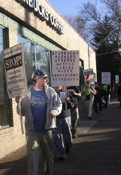

Submitted on Wed, 05/09/2007 - 4:04am
 As the May 17th Day of Action to commemorate the third anniversary of the Starbucks Workers Union approaches, IWW barista Sarah Bender will appear on Pacifica's Democracy Now!. On Wednesday May 9, Sarah will discuss the IWW's organizing drive at Starbucks and our Justice from Bean to Cup! initiative in the wake of the victory against Starbucks for Ethiopian coffee farmers.
As the May 17th Day of Action to commemorate the third anniversary of the Starbucks Workers Union approaches, IWW barista Sarah Bender will appear on Pacifica's Democracy Now!. On Wednesday May 9, Sarah will discuss the IWW's organizing drive at Starbucks and our Justice from Bean to Cup! initiative in the wake of the victory against Starbucks for Ethiopian coffee farmers.
Sarah was fired by Starbucks in retaliation for union activity in 2005. Far from backing down, Sarah coordinated a grassroots support effort which culminated in a legal victory against Starbucks that won Sarah her job back. In addition to organizing on the job, Sarah participated in a barista delegation to Ethiopia to build relationships with the coffee farmers growing beans for Starbucks.
Submitted on Mon, 04/30/2007 - 12:35pm
Since 2004, the managers at Starbucks stores across America have been trembling in the workplace, for the infamous revolutionary union, the Industrial Workers of the World (IWW or Wobblies) has been organising with workers and fighting for a better wage and a better world. When I set out to conduct an interview with some of the rank and file union members, I soon discovered that getting a hold of these people can be very difficult (apparently they’re all very busy fighting the class war). Eventually, Daniel Gross, perhaps the most well-known member of the Starbucks Workers Union, was kind enough to grant me an interview.
In this wide-ranging interview with IWW organizer Daniel Gross conducted by the UK-based Now or Never!, Gross discusses the innovative worker-controlled organizing model, known as solidarity unionism, that has made gains for Starbucks workers where the bureaucratic union model has failed. Gross explains the role of anarchists and anti-authoritarians in the global Starbucks Workers Union effort as well as his own anarchist worldview. He highlights the resurgence of the IWW, the challenge of precarious work, and calls for a direct action movement across borders to challenge the hegemony of corporate power. Gross also pays tribute to fallen comrade Brad Will who was a supporter of the Starbucks Workers Union and radical labor.
Submitted on Thu, 04/26/2007 - 3:11pm
Does Starbucks Need a Union?
 Starbucks is scared to debate the IWW Starbucks Workers Union because it doesn't want to talk about the gains we've made organizing against poverty wages and insecure work hours. So a Starbucks apologist stood in for the company.
Starbucks is scared to debate the IWW Starbucks Workers Union because it doesn't want to talk about the gains we've made organizing against poverty wages and insecure work hours. So a Starbucks apologist stood in for the company.
If you're a Starbucks barista you're a "partner," even though Starbucks pays a poverty wage and maintains a 100% part-time cafe workforce. Starbucks boasts that it provides health insurance for part time workers even though it insures a lower percentage of its workforce than Wal-Mart.
Submitted on Tue, 04/24/2007 - 1:40pm
With the decertification of the last seven unionized Starbucks outlets in Vancouver... there is now only one unionized Starbucks in the World. It's in Regina and the employees there are represented by the Retail, Wholesale and Department Store Union.
You'd think that might take the steam out of - other drives to unionize Starbucks outlets. But not so - for Daniel Gross. He's not backing away from his own bid - although he is taking a slightly different tact. Three years ago while he was working as a "barista" at a Starbucks in New York City, he organized the Starbucks Workers' Union and affiliated the group with the International Workers of the World.
Daniel Gross was fired last July in disputed circumstances. And late last month, the U.S. National Labor Relations Board charged Starbucks with 30 violations of the law in an alleged attempt to ward off union activity at four Manhattan outlets. Starbucks denies the charges.
Daniel Gross is still an organizer with the Starbucks Workers' Union and he was in New York City.
Submitted on Fri, 04/13/2007 - 1:46pm
 By David Segal
By David Segal
Washington Post Staff Writer
Thursday, April 12, 2007; Page C01
NEW YORK - Four years ago, when he first donned a green apron at the Starbucks at Madison Avenue and 36th Street, Daniel Gross must have looked like any other scruffy college grad in need of a paycheck and a shave. Within a few months, though, it was clear that this Los Angeles native with the perpetual stubble was something very different: the Norma Rae of the Caramel Macchiato.
Soon after he started, Gross and some fellow baristas began to meet at each other's homes to gripe about their jobs. The pace was exhausting, the store chronically understaffed and, under Starbucks's "flexible" scheduling rules, the number of hours they worked could change week to week, leaving them unsure of how much they would earn.